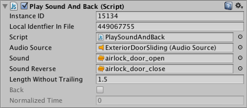

Inspector Options
The Inspector Lock and the Inspector Debug Mode are two useful options that can help you in your workflow.
Lock
Normally, the inspector shows the details of the currently selected object but it is sometimes useful to keep one object in the inspector while you work with others. To enable this, the inspector has a Lock mode that you can activate with the small padlock icon to the top right of the inspector window.
Note that you can have more than one inspector open at once (menu: Add Tab from the inspector tab menu), so you could keep one locked and have a second one to show the current selection. Below is an example of adding a new tab and locking it so it retains the desired view. The result is two Inspector windows, both visible, each showing different content.

Debug/Normal Mode
Another option on the tab menu is the choice between Normal mode and Debug mode. Normally, the inspector shows a custom editor for an asset or component if one is available but sometimes it is handy to see the properties directly. Debug mode shows just the properties rather than a custom editor and for scripts, it also displays private variables (although their values can't be edited like those of public variables).

As with Lock mode, Debug/Normal mode is applied to each inspector individually, so you can have two inspectors open at once to see both views.